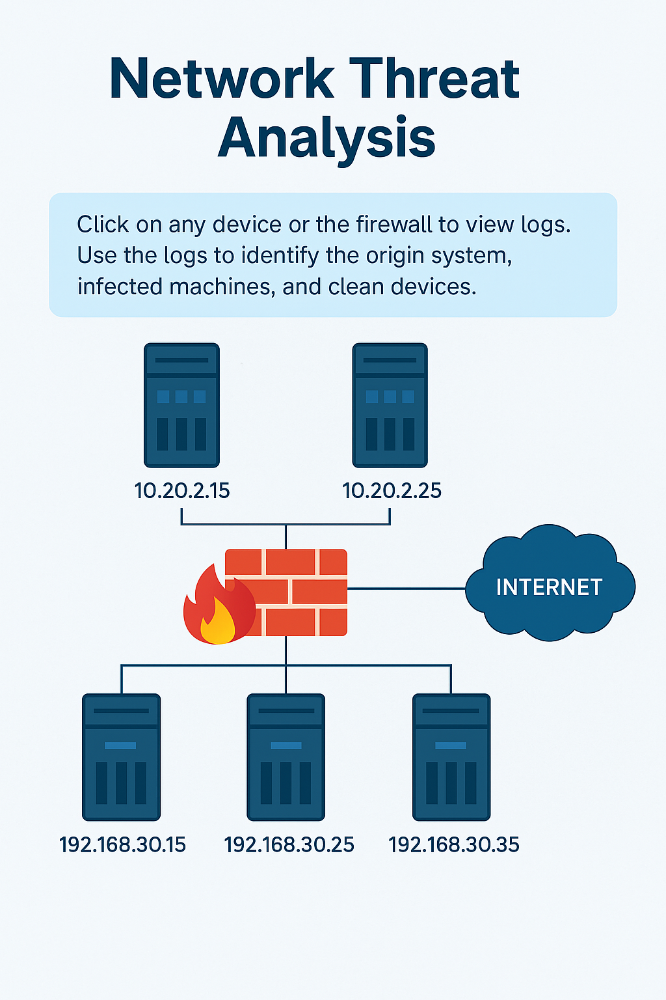

Network Threat Analysis
Click on any device or the firewall to view its logs. Use the logs to identify the origin system, infected machines, and clean devices, then submit your assessment.

Click on any device or the firewall to view its logs. Use the logs to identify the origin system, infected machines, and clean devices, then submit your assessment.
